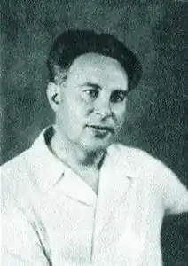

Єврейський поет Лев Мойсейович Квітко (15.10.1890 — 12.8.1952).
Лев Квітко, напевно, найвідоміший з єврейських радянських письменників 30-х – 60-х років 20 ст. Популярність він отримав головним чином завдяки своїм дитячим віршам. Але, говорячи про майстерність Квітко, критики нерідко забували, що його дивовижні, визнані класичними вірші, на яких виросло декілька поколінь дітвори, — тільки одна з граней його таланту.
Л.Квітко проголошував своєю піснею загибель старого і народження нового світу в такій неповторно-своєрідній формі, що досі його поезія свіжа і емоційно-дієва, яким буває справжнє мистецтво. Витоки оригінальності Квітко, неповторності його індивідуального стилю знаходяться у його народності. Звичайно, народними були і твори Ошера Шварцмана, Давида Гофштейна, Переца Маркіша, разом з якими Квітко зводив фундамент нової єврейської літератури, але для нього народність – світовідчуття художника. За безпосередності, природності вираження думки і почуття Льва Квітко можна порівняти з Шолом-Алейхемом. Ш-А трансформував народну творчість у мистецтво, фольклор — в літературу; Квітко продовжив цю традицію. Народився Лейбеле в містечку Голосків (нині село с.Голоскове Хмельницької області) за документами — 11 листопада 1890 року, але точної дати свого народження не знав і називав імовірно 1893 або 1895 рр. Сім'я бідувала, голод, злидні. Рано осиротів, виховувався бабусею, деякий час навчався в хедері, з дитинства був змушений працювати. Всі діти цієї сім'ї в ранньому віці розбрелися на заробітки, у тому числі з 10 років почав працювати і Лейб. Читати та писати навчився самотужки. Вірші почав писати з 12 років (або, можливо, раніше — через плутанину з датою його народження), ще до того як навчився писати. У 1915 р в Умані познайомився з євр. письменником Д. Бергельсоном, який ввів його в літературні кола. Дебютував у травні 1917 р. в соціалістичній газеті "Дос Фрає ворт" ("Вільне слово"). У тому ж році вийшла збірка віршів для дітей "Ліделех" ("Пісеньки"). У 1917 р. Квітко оселився в Києві. Публікація його віршів у збірці "Ейгнс" ("Рідне") висунула його (разом з Д. Гофштейном і П.Маркішем) в тріаду провідних поетів "київської групи". Написана ним в жовті 1918 р. поема "Ройтер штурем" ("Червона буря") надр. в газ. "дос Ворт" ("Слово", 1918) та журн. "Багінен" ("Світанок", 1919) стала першим твором на їдиш про Жовтневу революцію й пролетарську дружбу народів: "Від мого брата пахне соломою, від нас обох пахне боротьбою!" Однак у збірниках "Тріт" ("Кроки", 1919) і "Лірик. Гайст" ("Лірика. Дух", 1921) поряд з юнацькому завзятим сприйняттям жовтня звучало тривожне сум'яття. У віршах Квітко тих років простосердий погляд на світ (особливо приваблива його творчість для дітей), глибина світосприйняття, поетичне новаторство і експресіоністичні шукання поєднувалися з прозорою ясністю народної пісні. Їх мова багата та колоритна. Лірика Квітко зігріта свіжим, добрим гумором. У середині 1921 поет оселився в Берліні, де вийшли його збірки "Грінгроз" ("Зелена трава", 1922) , "1919" (1923, присвячена погромам в роки громадянської війни). Потім переїхав до Гамбурга, де працював у радянському торговому представництві, публікуючи свої твори як у радянських: "Штром"("Потік") , "Гейєндік" ("Вирушаючи"), так і в західних "Мілгройм" ("Гранат"), "Цукунфт" ("Майбутнє") періодичних виданнях. У Гамбурзі Л.Квітко вступив у компартію Німеччини і вів пропагандистську роботу серед торгових працівників. У 1925 р, побоюючись арешту, він повернувся до СРСР, увійшов у літературну асоціацію "Жовтень" та редколегію журналу "Ді ройте велт" ("Червоний світ"), в якому були надруковані його розповіді про життя в Гамбурзі "Ріограндер фел" ( "Ріограндске хутро", 1926; окр. вид. 1928), автобіографічна повість "Лям ун Петрік" ("Лям та Петрик", 1928 —29, окр. вид. —1930, в рос. пер. 1958) та інші твори. Тільки у 1928 вийшло 17 книг автора для дітей. На українську мову його перекладали Павло Тичина, Максим Рильський, Володимир Сосюра. Російською мовою відомі вірші Квітко в перекладах Ахматової, Маршака, Чуковського, Хелемського, Свєтлова, Слуцького, Михалкова, Найдьонової, Благиніної, Ушакова. Ці переклади стали явищем у російській поезії. Сатиричні вірші Квітко в "Ді ройте велт", які згодом склали розділ "Шаржн" ("Шаржі") в його збірці "Герангл" ("Сутичка", 1929), особливо вірш "Дер штінклфойгл Мойлі" ("Смердючий птах Мой [ше ] Лі [тваков]") проти диктату діячів євсекцій, викликали розгромну кампанію. "Пролетарські" письменники звинуватили Квітко в "правому ухилі" й домоглися його виключення з редакції журналу. З 1931 р. письменник працював робітничим на Харківському тракторному заводі. Нова збірка "Ін трактор-цех" ("У тракторному цеху", 1931) також не заслужила схвалення "пролетарської" критики. Лише після ліквідації у 1932 р. літературних асоціацій та угруповань Квітко зайняв одне з провідних місць в радянській єврейській літературі, головним чином як дитячий поет. З 1936 р. жив у Москві. Його "Геклібене верк" ("Вибрані твори", 1937) вже повністю відповідали вимогам соцреалізму. У 1939 р. він вступив до КПРС. Автоцензура позначилася й на його автобіографічному романі у віршах "Юнге Йорн" ("Молоді роки"), про події 1918 р.; сигнальні екземпляри з'явилися в Каунасі напередодні вторгнення гітлерівських військ; 16 глав на їдиш опубліковані в 1956-63 рр. В "Парізер Цайтшрифт" ("Паризькому журналі"); рос. вид. у 1968 р.). Талант Квітко особливо яскраво розкрився в його поезіях для дітей і про дітей. Світ людини з народу, по думці Шолом-Алейхема, аналогічний світу дитини. Світ дітей в поезії Квітко — широкий й просторий, світлий і безтурботно вільний. Душа дитини, як і душа народу, була відкрита для поета, він читав у ній, як у своїй власній душі. Не тільки зміст, дія, психологія, а й манера мови — все природно в дитячих віршах Квітко. Корній Чуковський, друг і шанувальник Льва Квітко, писав: "Зачарованість навколишнім світом зробила його дитячим письменником; від імені дитини, під личиною дитини, вустами п'ятирічних, шестирічних, семирічних дітей йому легше було висловити свою любов до життя, свою просту віру в те, що життя створено для безмежної радості". У роки війни Квітко був членом редколегії газети "Ейнікайт" ("Єдність), в 1947-48 рр. — Літературно-мистецького альманаху "Геймланд" ("Батьківщина"). Його збірки віршів "Фаєр аф ді сонім" ("Вогонь по ворогам", 1941) та інші закликали до боротьби проти нацистів. Вірші 1941-46 рр. склали збірку "Гезанг фун майн геміт" ("Пісня моєї душі", 1947; рос. пер. 1956). З початком війни Квітко за віком не взяли в діючу армію. Його викликали в Куйбишев для співпраці у Єврейському антифашистському комітеті (ЄАК). Це була трагічна випадковість, бо Квітко був далекий від політики. ЄАК зібрав колосальні кошти серед багатих євреїв Америки на озброєння Радянської Армії. Але після перемоги, Сталін оголосив його реакційним сіоністським органом. Втім, Лев Мойсейович у 1946 році вийшов з ЄАК і цілком присвятив себе поетичній творчості. 22 січня 1949 Квітко був заарештований. Йому було пред'явлено звинувачення, що в 1946 році він встановив особистий зв'язок з американським резидентом Гольдбергом, якого інформував про стан справ у Союзі Радянських письменників. Також звинуватили в тому, що в молодості він вчився у Німеччині, а в Гамбурзі відправляв під виглядом посуду зброю для Чай Кан Ші. На суді Квітко був змушений визнати свою помилку в тому, що писав вірші єврейською мовою їдиш, і це гальмувало асиміляцію євреїв в сім'ї народів СРСР. І взагалі, їдиш – прояв буржуазного націоналізму. 12 серпня 1952 – Квітко розстріляли разом з поетом Перецем Маркішем, режисером розігнаного Єврейського театру Веніаміном Зускіним та іншими діячами єврейської культури. У відділі фонду юдаїки зберігаються найрізноманітніші зразки творчості поета. На виставці представлені окремі видання віршів для дітей, збірки лірики, соціальна сатира мовою їдиш. Хронологія видань з 1919 до 1948. Тут і наївні дитячі пісеньки, і дитяча радість та юнацька надія, а також замовні "прорадянські" патріотичні вірші. Читачі, що не володіють їдиш також мають змогу ознайомитись з віршами в перекладах С. Маршака, М. Свєтлова, М. Алігер та інш.